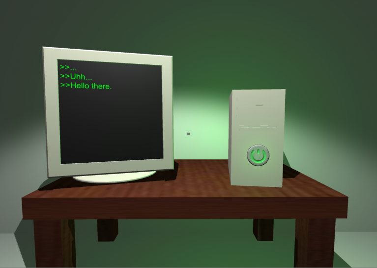
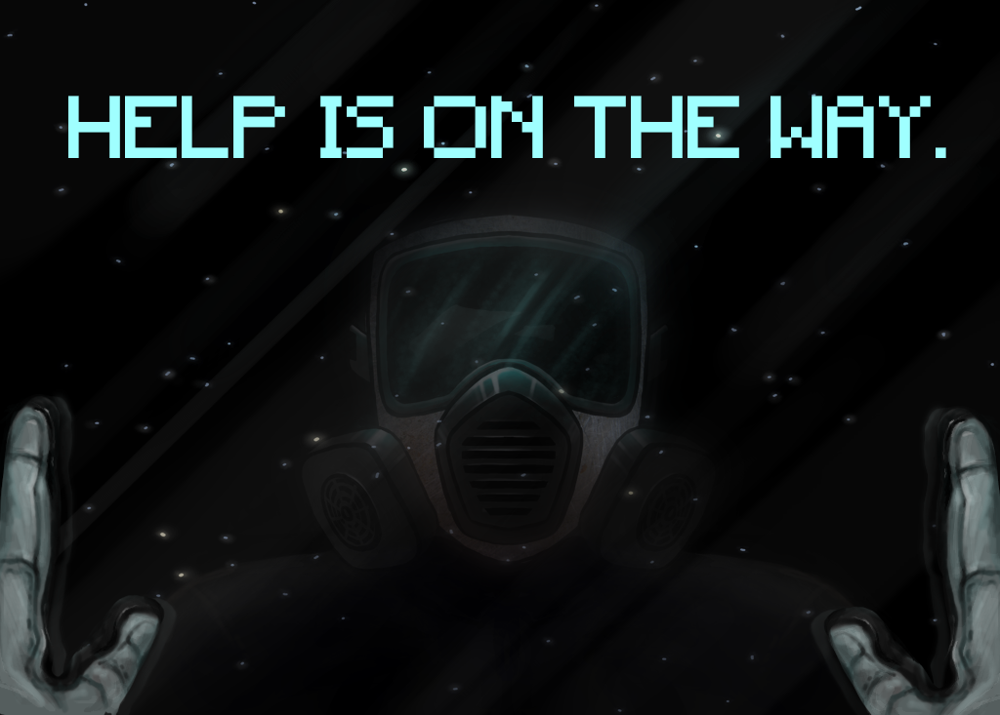
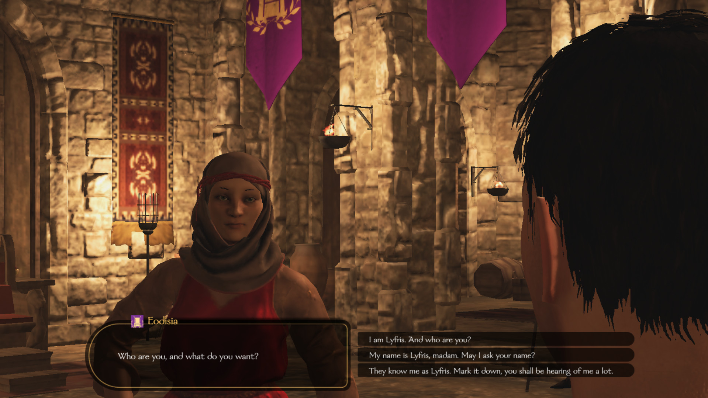
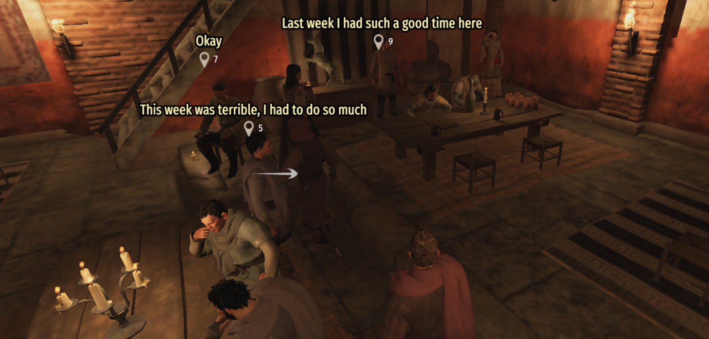

Game Designer & Developer
Quick experiments and mechanic tests
In Computer Graphics, I developed from scratch a game engine using C++ and OpenGL.
In this project I learned the basics of a game engine and the various steps of the rendering pipeline. It was fairly difficult to change from algebra on paper into code, but it was a very rewarding when it finally worked.
The video showcase is a group project where me and my colleagues worked on several parts of the engine such as the physics, camera, movement controls and animations.
In the Virtual Reality course, me and my colleagues developed a Virtual Reality application, that explored the connection in a virtual environment between two mediums of interaction. This project was published as a scientific article with the title "Exploring Bi-Directional Pinpointing Techniques for Cross-Reality Collaboration".
This application functions as a puzzle-like game where two users, one in a VR headset and another in a tablet, have to interact with each other in order to progress each room.
Read ArticlePassion projects I'm currently developing
A narrative-driven uncanny game set on an office space. Players are tasked to write words every so often in order to continue employed (and not lose). By faster and efficient typing the player then has space to explore the bizzare area and experience the story.
A browser/mobile game where the player takes a management role in a fantasy scenario. They control parties of adventurers, their equipment and strategies, to later watch how the parties (controlled by AI) performed in their missions.
A RPG creature collection game with a focus on two important aspects: competitive battles and evolution progress. The player needs to seek ways to evolve their creatures instead of happening organically, and they have a high degree of customization with forking evolution paths and mastering actions.
Tabletop games designed and playtested

A 4X strategy game for 2-4 players. Build your civilization through resource management and diplomacy.

A bidding and bluffing game where players trade magical ingredients. Most unique auction mechanic I've designed.
FIX_ME.exe
The game's objective was to repair levels in order to progress through them. However, the main features of it were (intentional) visual bugs and a lot of humor. Mainly due to the humor, we managed to win the Jam's first prize.
Check Game

The Cute Old One
There were several themes to choose from, but basically our theme revolved around IPs that became public copyright. We jokingly went with the pun between Cat and Cthulhu (Cathulu?) and tried to make a worrisome, uncanny and cute? game where the player cares for an eldritch being. Curiously it was my first time working with actual artists on a game, so this was an interesting (and positive) experience for me.
Play GameHold your breath
The theme was mask, so in order to make a game where mask was a fulcral part of the game, we aimed to developed a horror game where the mask was both a necessity and a hindrance. Unfortunately we couldn't finish the implementation of the "enemy" but the game was still very fun to make. This was the first time I was the only programmer, it was very challenging but a learning experience nonetheless.
Check Game
CiF-Bannerlord: A Social Artificial Intelligence System for Mount & Blade II: Bannerlord
From January to November 2021, I developed my Master's thesis—a mod bringing social AI to Mount & Blade II: Bannerlord. Working without source code access, I decompiled the game using dnspy and built the modification in C# with Visual Studio. It was a staggering challenge: millions of lines of decompiled code with zero comments, and my first time modding a commercial game.
The solution extends Comme il Faut (CiF) , a social architecture first implemented in Prom Week. CiF gives NPCs desires, traits, statuses, and relationships—empowering them to pursue individual goals and interact independently from the player. In Bannerlord, this means characters now walk around, talk with each other, and even initiate dialogue with the player. NPCs were equipped with more dialog options conveying different intents—positive, negative, or romantic—transforming the base game's static social scenes into immersive, dynamic environments.
CiF-Bannerlord aimed to study how an active social environment impacts player immersion and NPC believability in a AAA game. Testing was conducted through a NexusMods release and controlled user tests. Results showed a significant positive impact on the game's social experience.

NPC conversation system - Characters now interact autonomously

Tavern social scene - Dynamic NPC gatherings and interactions

Game Designer & Developer
I'm currently studying Game Design at Uppsala University's Campus Gotland, pursuing a Master's Degree to deepen my design skills and experience. Most importantly, I'm here to network with people from the games industry and connect with peers who share my passion for different areas of game design.
Before diving into game design, I worked as a software developer which has allowed me to learn and grow professionally in order to understand the development process of software projects. But now I'm following my passion toward developing games I'm genuinely excited about.
I've always been a gamer, but after gaining experience in software development, I found a new enjoyment in analyzing gameplay features and design choices in games, how would I do it or what would I change, something I hadn't thought much about before. That said, I still love playing games purely for fun, especially with friends. I find gaming is a great tool for socializing and staying connected.
I have various hobbies and interests, all of them very unique, such as gaming, traveling, cooking and exercise. I've been hitting the gym regularly and running occasionally (when it's not too cold). I used to go climbing, though I find I get bored if I go too often. During my teen years, I was a competitive swimmer, even though I wasn't the best, it shaped a good part of my formative years, and I'm grateful for all the challenges I pushed through and I am excited to train still (especially if I have company).